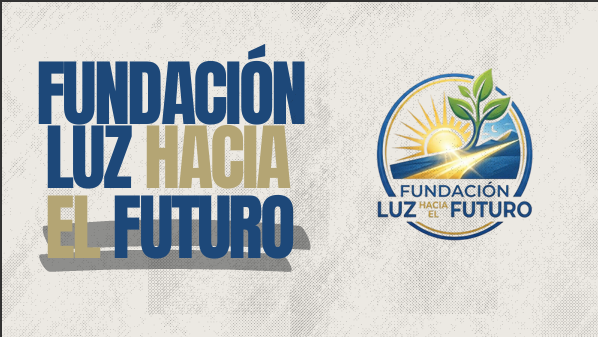

El proyecto "25 Sueños, Un Futuro" es una iniciativa de ayuda social y educativa diseñada por el grupo estudiantil Fundación Luz Hacia el Futuro, perteneciente a la Facultad de Ingeniería de la Universidad Mariano Gálvez de Guatemala. Su propósito central fue mejorar las condiciones pedagógicas de la Escuela El Tabloncito en Villa Nueva, transformando un aula que carecía de los recursos físicos mínimos para un aprendizaje digno. Es una intervención material y de valores orientada a los estudiantes de sexto primaria. Se basa en la premisa de que un ambiente cómodo y funcional es indispensable para que los niños desarrollen sus habilidades fundamentales. El proyecto combina la planificación administrativa con el compromiso social para reducir las carencias de mobiliario escolar.

El objetivo principal del proyecto es dotar de mobiliario básico a la Escuela El Tabloncito, ubicada en Villa Nueva, específicamente para el aula de sexto primaria. Esta iniciativa se justifica en que la falta de recursos adecuados impacta negativamente en la concentración y el rendimiento académico de los estudiantes, afectando su proceso de aprendizaje.
Con este proyecto se hace conciencia de la probreza que enfrentan muchas comunidades, y se busca generar un cambio positivo en sus condiciones de vida como se puede cambiar la vida personas dandoles cosas que nosotros consideramos normal lo cual para algunas comunidades no con este proyecto me di ceunta hay que ayudar a las demas personas.